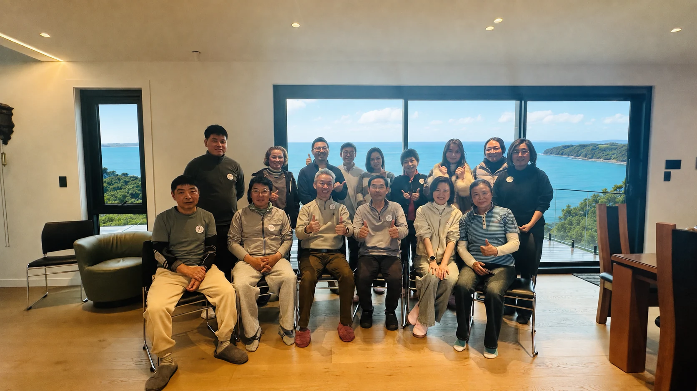
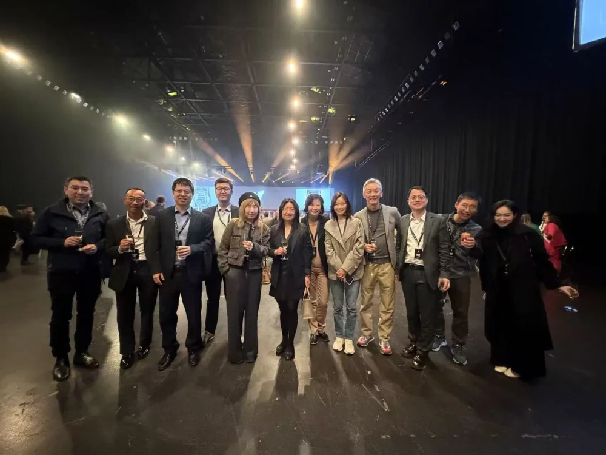
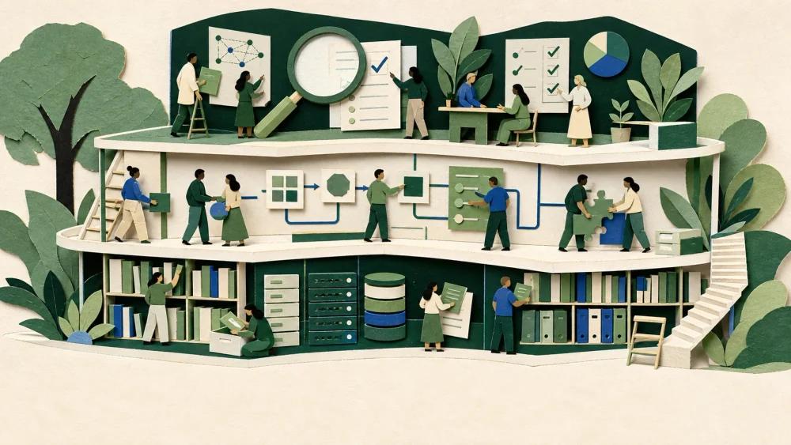
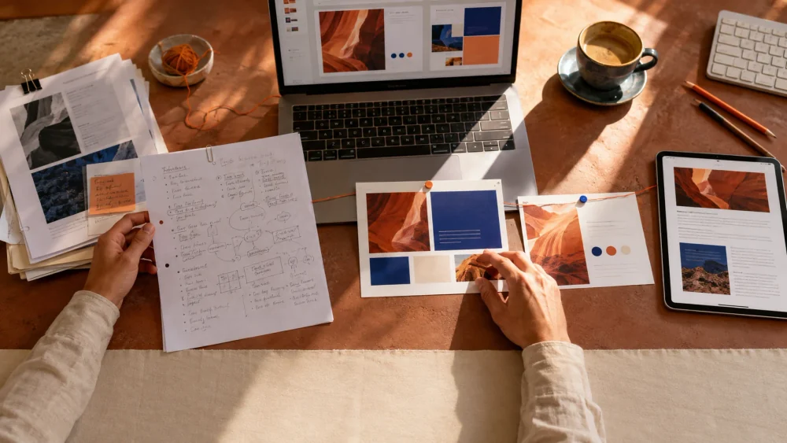
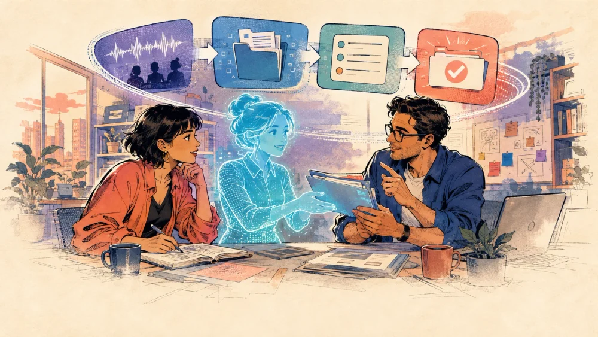
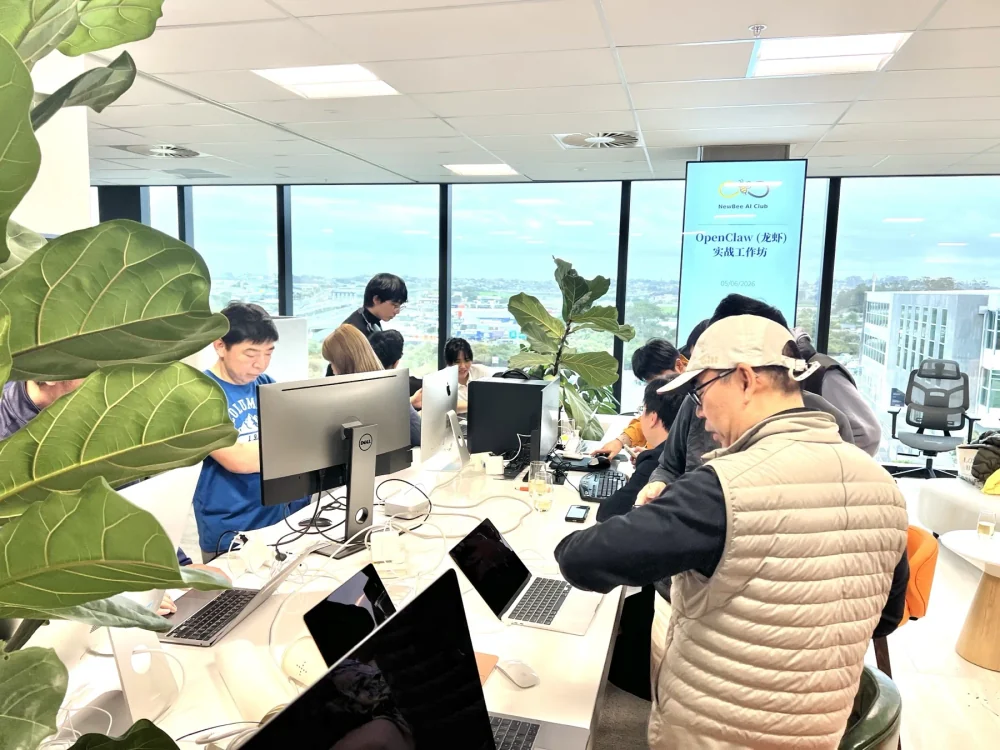
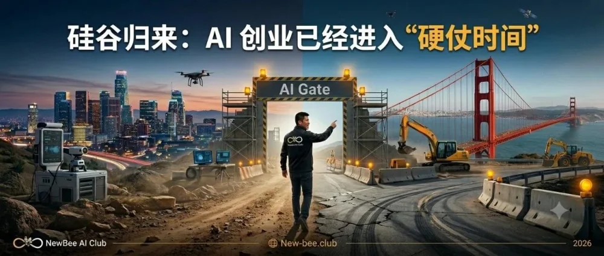
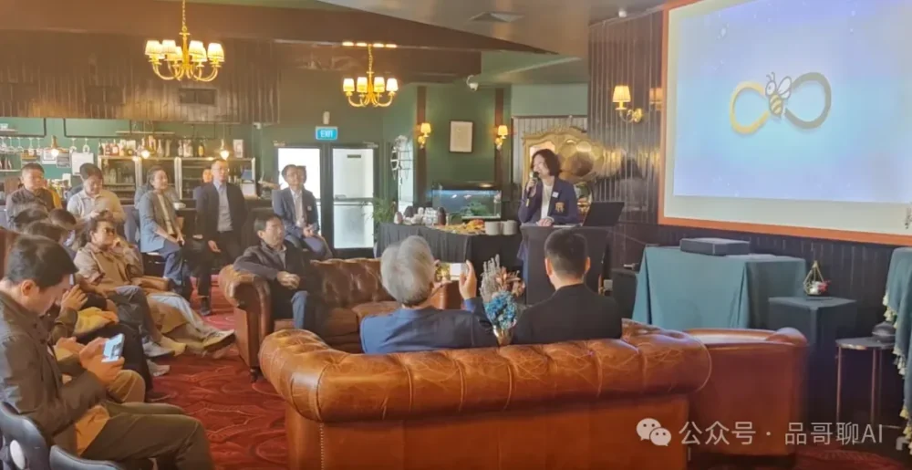

AI 不只会干活，还会陪你过日子
掼蛋、文字游戏、烘焙、亲子成长与家庭生活的平衡
阅读回顾
NewBee AI Club · 先蜂会
在新西兰，和一群有趣的人一起学习、创造。
让 AI 走进工作，也走进每一天的生活。

一个扎根新西兰的 AI 社群
NewBee AI Club（先蜂AI俱乐部）是立足新西兰的华人 AI 学习与实践社群。我们带着真实的问题相聚，在企业、家庭和跨行业的交流里，一起尝试、提问、复盘。
了解我们的理念真实的人，正在发生的尝试。看看我们最近聊了什么。
掼蛋、文字游戏、烘焙、亲子成长与家庭生活的平衡

20 个项目 · 1000+ 投资人与潜在投资人 · 两桌会员
AI × 历史 × 文化心理 · 胡韧奋博士

理解 AI · 掌握 AI · 信任 AI

PPT 实战 × 公众号内容工作流

从聊天框走向组织上下文与真实业务闭环

现场安装、配置与 AI 自动化协作

AI 前沿观察 × 新西兰创业案例

第一次创始会员成立会议 · Auckland
我们相信
从自己真正关心的问题出发，认真提问，持续学习，让每一个新发现都有继续探索的空间。
把一个想法变成一次尝试。用 AI 做一份作品、改善一条工作流，或为生活添一点新鲜。
在使用技术时保有人的判断，尊重隐私、彼此与真实世界，让我们的创造对人有益。
加入先蜂会
一群持续学习的人，一套可以用起来的支持。和我们一起，把 AI 的可能带进真实生活。
每个工作日，关注你的行业与议题。
一个入口，连接俱乐部 AI 工具与顾问。
20 人以下社群免费使用权。
每月至少一次，一起分享、动手实践。
品哥与 AI Master，陪你解决实际问题。
了解完整会员权益 ›非营利性社群 · 会费用于活动、项目与必要运营
NewBee AI Club，中文名先蜂AI俱乐部，简称"先蜂会"，是一个立足新西兰、由华人 AI 学习者、实践者及跨领域从业者共同参与的非营利性社群。委员会成立日为 2026 年 3 月 21 日，宗旨是"好奇心 · 创造力 · 致良知"。
俱乐部以新西兰奥克兰（Auckland, New Zealand）为主要活动基地，面向全球华人开放。线上活动覆盖全球时区，线下活动以奥克兰为主。
面向对 AI 学习、应用与交流有兴趣的华人个人开放，包括但不限于：在教育、产品、设计、研发、咨询、运营、创业、公益等领域探索 AI 应用的人；希望系统学习 AI、提升实践能力的学习者；愿意参与交流、共创、分享与社区建设的人。
目前开放普通会员申请，年费为 1,299 NZD。请进入网站的申请加入频道填写会员申请表；提交后由俱乐部审核并联系确认。如需帮助，可通过 office@new-bee.club 联系俱乐部。
会员核心五件套：① 行业定制新闻简报（每工作日 AI 生成）；② 会员专属 AI 私教 Agent（内置小龙虾、Hermes、GEO 诊断等工具）；③ Starmesh 平台 20 人以下免费使用权；④ 月度讲座与实操工作坊（每月至少一次）；⑤ 品哥 + AI Master 日常答疑。
不是。俱乐部不以盈利分配为目的，不向会员分红。所有会费、捐助或其他合法收入，均用于支持与使命相关的活动、项目及必要运营。
包括月度讲座、AI 实操工作坊、会员活动日、读书讨论、案例拆解、工具交流，以及围绕真实问题的小规模实验、协作项目与经验复盘。每月至少一次线下或线上活动。
可通过官方邮箱 office@new-bee.club 联系。重要事项请在邮件主题注明用途。